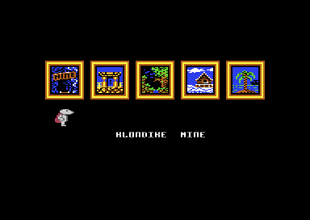
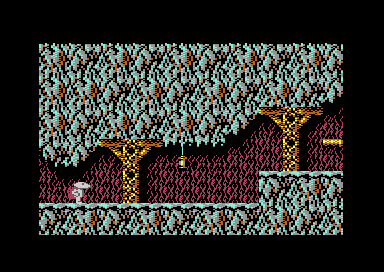
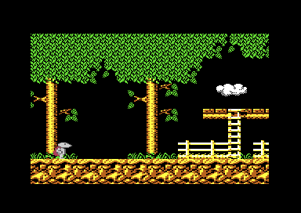
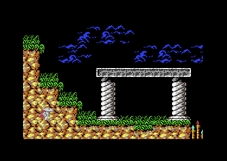
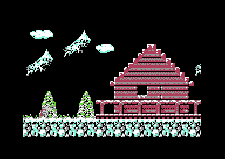
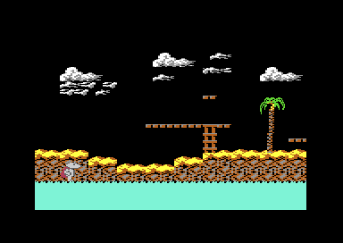

<meta charset="utf-8">
<meta name="viewport" content="width=device-width, initial-scale=1">
<title>Impossamole</title>
<link rel="preconnect" href="https://fonts.googleapis.com">
<link rel="stylesheet" href="https://fonts.googleapis.com/css2?family=Lato:wght@400;700;900&family=IBM+Plex+Mono:wght@400;500&display=swap">
<style>
:root{
  --bg:#23262d; --paper:#e9e7e1; --surface:#ffffff; --surface-2:#f1efea; --line:#d5d3cc; --line-soft:#e0ded8;
  --ink:#2f3136; --ink-soft:#55585f; --ink-mute:#80838a;
  --link:#1f5fa8; --link-hover:#154480; --accent:#1f5fa8;
  --amber:#c25a00; --cyan:#1f5fa8; --coral:#d04a3a; --green:#2a8a4a; --violet:#4a5bd6; --hl:#fff0c2;
  --chip:#2f3136; --chip-ink:#ffffff;
  --c64blue:#40318d; --c64grey:#686868;
  --fd:'Lato',system-ui,sans-serif; --fb:'Lato',system-ui,sans-serif; --fm:'IBM Plex Mono',ui-monospace,Menlo,monospace;
  --col:1080px; --gx:68px; --fs:17px; --lh:1.6; --hw:900; --h1:46px; --h2:26px; --sy:48px; --pp:26px; --r:10px;
  --plate-shadow:0 1px 2px rgba(0,0,0,.05),0 4px 14px rgba(0,0,0,.05);
}
*{box-sizing:border-box}
html{background:var(--bg);min-height:100%}
body{background:var(--paper);color:var(--ink);font-family:var(--fb);font-size:var(--fs);line-height:var(--lh);max-width:var(--col);margin:0 auto;min-height:100vh;padding:0 0 4rem}
h1,h2,h3{font-weight:var(--hw);letter-spacing:-.01em;text-wrap:balance;color:var(--ink);margin:0}
.wrap{padding:0 var(--gx)}
.hero{padding:48px var(--gx) 8px;text-align:left}
.eyebrow{font-family:var(--fm);font-size:12px;letter-spacing:.08em;text-transform:uppercase;color:var(--ink-mute);margin:0 0 10px}
.hero h1{font-size:var(--h1);line-height:1.15;letter-spacing:-.02em;margin:0 0 14px}
.hero .sub{margin:0 0 .6em;color:var(--ink-soft)}
section{padding:var(--sy) 0 24px}
section:last-of-type{border-bottom:none}
.fig{font-family:var(--fm);font-size:12px;letter-spacing:.08em;text-transform:uppercase;color:var(--ink-mute);margin:0 0 10px}
h2.t{font-size:var(--h2);margin-bottom:12px}
.lede{color:var(--ink-soft);margin:0 0 30px}
.plate{background:var(--surface);border:1px solid var(--line);border-radius:var(--r);padding:var(--pp);box-shadow:var(--plate-shadow)}
.cap{font-size:14px;color:var(--ink-mute);margin-top:14px;line-height:1.55}
.cap b{color:var(--ink);font-weight:700}
code{font-family:var(--fm);font-size:.82em;background:var(--chip);color:var(--chip-ink);border-radius:4px;padding:2px 6px;overflow-wrap:break-word;-webkit-box-decoration-break:clone;box-decoration-break:clone}

</style>
<style>.im-row{display:flex;gap:16px;flex-wrap:wrap;align-items:center}.im-pics{display:grid;grid-template-columns:1fr 1fr;gap:18px}.im-pics img,.im-gallery img{width:100%;image-rendering:pixelated;display:block}figure{margin:0}canvas{image-rendering:pixelated;max-width:100%;height:auto}button,select,input{font:inherit}button,select{padding:8px 12px;margin:4px;border:1px solid #aaa;border-radius:5px;background:#fff;color:#222}button{cursor:pointer}button:focus-visible,select:focus-visible{outline:3px solid #1f5fa8}input[type=range]{width:min(100%,500px)}.im-note{font-size:14px;color:#555}.im-scroll{overflow:auto;background:#111;border-radius:6px}.im-scroll canvas{max-width:none;display:block}#im-world{height:384px;width:auto;cursor:pointer}@media(max-width:650px){#im-world{height:288px}}table{border-collapse:collapse;width:100%;margin:18px 0}th,td{text-align:left;padding:9px;border-bottom:1px solid #ddd;vertical-align:top}output{display:block;margin:10px 0}.im-error{color:#9e2419}.im-wide{display:block;width:100%;margin-top:12px;border-radius:4px}.im-thumb{width:48px;min-width:48px;height:42px;background:#111;border-radius:4px;display:block}
.im-gallery{display:grid;grid-template-columns:repeat(3,1fr);gap:14px}.im-gallery figcaption{font-size:14px;color:var(--ink-mute);margin-top:6px}
.im-items{display:grid;grid-template-columns:repeat(auto-fill,minmax(112px,1fr));gap:10px;margin-bottom:16px}.im-item{display:flex;flex-direction:column;align-items:center;gap:4px;margin:0;padding:10px 6px;line-height:1.25}.im-item canvas{background:#111;border-radius:4px;width:72px;height:63px}.im-item small{color:var(--ink-mute);font-family:var(--fm);font-size:12px}.im-item[aria-pressed=true]{outline:3px solid var(--accent);outline-offset:1px}
.im-bar{height:12px;background:var(--surface-2);border:1px solid var(--line);border-radius:7px;overflow:hidden;margin:6px 0 12px}.im-bar i{display:block;height:100%;width:0;background:var(--amber)}
.im-pad button{min-width:110px;touch-action:none;user-select:none;-webkit-user-select:none}.im-pad button.on{background:var(--accent);color:#fff;border-color:var(--accent)}
.im-stats{display:flex;gap:28px;flex-wrap:wrap;font-family:var(--fm);font-size:14px;color:var(--ink-soft);margin-top:8px}.im-stats b{display:block;font-size:26px;color:var(--ink)}
.im-screen{background:#000;color:#fff;font-family:var(--fm);font-size:15px;line-height:1.7;padding:18px 20px;border-radius:6px;white-space:pre-wrap;margin:0 0 18px}
.im-name{font-family:var(--fm);font-size:20px;letter-spacing:.12em;text-transform:uppercase;width:12ch;padding:6px 10px;border:1px solid #aaa;border-radius:5px}
.im-key[hidden]{display:none}.im-key{display:flex;flex-wrap:wrap;gap:8px 18px;font-size:14px;color:var(--ink-soft);margin:10px 0 0}.im-key label{display:flex;align-items:center;gap:6px}.im-key i{display:inline-block;width:14px;height:14px;border-radius:3px}
.im-cast{display:grid;grid-template-columns:repeat(auto-fill,minmax(96px,1fr));gap:10px}.im-cast figure{background:#1e3238;border-radius:6px;padding:6px 4px;text-align:center}.im-cast canvas{width:100%;max-width:144px;height:auto}.im-cast figcaption{color:#ccc;font-size:12px;line-height:1.3;min-height:2.6em}
@media(max-width:650px){.wrap{padding:0 20px}.hero{padding:30px 20px}.im-pics{grid-template-columns:1fr}.im-gallery{grid-template-columns:1fr 1fr}.plate{padding:16px}h1{font-size:36px!important}}</style>
<!-- tabs -->
<header class="hero">
<p class="eyebrow">1990 · Gremlin Graphics · C64</p>
<h1>Impossamole</h1>
<p class="sub">Monty Mole goes after the five Scrolls of Eternal Life for a group of aliens. One engine runs five worlds, each loaded from disk with its own scenery, creatures and shop.</p>
</header>
<main class="wrap">
<section id="game">
<h2 class="t">A mole on five missions</h2>
<p>Monty explores a mine in the Klondike, the Orient, a rainforest and Iceland to recover stolen scrolls. He jumps between platforms, fights creatures, and picks up food, weapons and money. Each world ends with a guardian.</p>
<p>The first four can be played in any order from the selector. When all four are done, the fifth, the Bermuda Triangle, opens.</p>
<div class="im-gallery">
<figure><figcaption>The selector</figcaption></figure>
<figure><figcaption>Klondike Mine</figcaption></figure>
<figure><figcaption>The Orient</figcaption></figure>
<figure><figcaption>Amazonian Forest</figcaption></figure>
<figure><figcaption>Iceland</figcaption></figure>
<figure><figcaption>Bermuda Triangle</figcaption></figure>
</div>
<p>Bringing back all five scrolls ends the game with this message:</p>
<pre class="im-screen" aria-label="The ending message">        CONGRATULATIONS MONTY
 YOU HAVE SUCCESSFULLY OBTAINED THE
SCROLLS OF ETERNAL LIFE. THUS SAVING
OUR PLANET FROM CERTAIN DESTRUCTION.
THAT SHOULD KEEP THOSE ALIENS HAPPY.
 I WONDER ABOUT MY NEXT ADVENTURE?.</pre>
</section>
<section id="shop">
<h2 class="t">Every world has a shop</h2>
<p>A door somewhere in each world leads to a shop, a single room with the goods laid out on shelves. Monty touches an item to see its price and presses fire to buy it. Money comes from coins found on the way, 25 at a time, and he can carry 250 at most. How much he really pays is up to the joystick: see <a href="discoveries.html#haggle">waggling the price down</a>.</p>
<div class="plate">
<label>World <select id="im-shop-level"></select></label>
<canvas id="im-shop" class="im-wide" width="320" height="192"></canvas>
</div>
<table>
<tr><th></th><th>Item</th><th>Price</th><th>What it does</th></tr>
<tr><td><canvas class="im-thumb" data-item="5" width="72" height="63"></canvas></td><td>Slimy worms</td><td>75</td><td>Food: restores 5 points of energy.</td></tr>
<tr><td><canvas class="im-thumb" data-item="1" width="72" height="63"></canvas></td><td>Shatterbomb</td><td>125</td><td>A weapon that explodes. It wears off after a while.</td></tr>
<tr><td><canvas class="im-thumb" data-item="2" width="72" height="63"></canvas></td><td>Power gun</td><td>150</td><td>A gun. At full strength its shots home in on a creature. It wears off.</td></tr>
<tr><td><canvas class="im-thumb" data-item="3" width="72" height="63"></canvas></td><td>Lazer gun</td><td>175</td><td>A beam that flies straight and flashes through colours. It wears off.</td></tr>
<tr><td><canvas class="im-thumb" data-item="7" width="72" height="63"></canvas></td><td>Pinta a day</td><td>200</td><td>Makes the energy bar two steps longer, up to 17, and restores 4 points.</td></tr>
<tr><td><canvas class="im-thumb" data-item="4" width="72" height="63"></canvas></td><td>Soup can</td><td>250</td><td>One more step of strength, up to 3.</td></tr>
</table>
</section>
<section id="sound">
<h2 class="t">One tune and sixteen sound effects</h2>
<p>Barry Leitch’s tune plays on the title screen. Before play starts, the joystick chooses whether the game has the tune or the sound effects; it never has both. A cheat name typed into the high-score table can put part of the tune out of key: see <a href="discoveries.html#tune">the Discoveries tab</a>.</p>
<div id="im-music" class="plate"></div>
<div id="im-effects" class="plate"></div>
</section>
</main>
<footer style="margin:16px 0 0;padding:22px var(--gx) 0;border-top:1px solid #e0ded8;font-family:'IBM Plex Mono',ui-monospace,Menlo,monospace;font-size:12px;color:#80838a">
<a href="https://github.com/gamesexplained/gamesexplained" style="color:#1f5fa8;text-decoration:none">GitHub</a> · <a href="https://discord.gg/3V9GWyRDWV" style="color:#1f5fa8;text-decoration:none">Discord</a>
<br>© Games Explained contributors. Write-ups, facts and symbol maps are available under <a href="https://creativecommons.org/licenses/by-sa/4.0/" style="color:#1f5fa8;text-decoration:none">CC BY-SA 4.0</a>; code under <a href="https://opensource.org/licenses/MIT" style="color:#1f5fa8;text-decoration:none">MIT</a>
</footer>
<script src="../../lib/c64.js"></script><script src="../../lib/sid.js"></script><script src="../../lib/cpu6502.js"></script><script>
const IM_IDS=['klondike','orient','amazon','iceland','bermuda'];
const IM_NAMES=['Klondike','Orient','Amazonian Forest','Iceland','Bermuda Triangle'];
const $=id=>document.getElementById(id);
async function imMemory(i){const [r,l]=await Promise.all([C64.load('parts/resident/listing.json'),C64.load('parts/'+IM_IDS[i]+'/listing.json')]);const m=r.ram.slice();for(let a=0;a<65536;a++)if(l.has[a])m[a]=l.ram[a];return m;}
function imFail(e){console.error(e);const x=document.createElement('p');x.className='im-error';x.textContent='Viewer stopped: '+e.message;document.querySelector('main').append(x);}
// im-map-port
function imBlock(m,id){return Array.from(m.slice(0xb000+16*id,0xb010+16*id));}
function imDrawMap(canvas,m,start=0,columns=40,overlay=false){canvas.width=columns*8;canvas.height=192;const c=canvas.getContext('2d'),cs=m.subarray(0xf000,0xf800),level=m[0x83e6],pal=C64.PAL;
for(let x=0;x<columns;x++)for(let y=0;y<24;y++){const col=start+x,block=m[0xa410+Math.floor(col/4)*6+Math.floor(y/4)],ch=imBlock(m,block)[(y%4)*4+col%4],co=m[0xae00+ch];
 if(co&8)C64.drawGlyphMC(c,cs,ch,x*8,y*8,1,[pal[0],pal[m[0x7ec1+level]&15],pal[m[0x7ec6+level]&15],pal[co&7]]);else C64.drawGlyph(c,cs,ch,x*8,y*8,1,pal[co&15],pal[0]);
 if(overlay){const t=m[0xaf00+ch];c.fillStyle=['#ffffff00','#4af8','#4f48','#ff48','#f448'][Math.min(t,4)];c.fillRect(x*8,y*8,8,8);}}
}
// end im-map-port
// im-audio-driver
function createDriver(D,C64Cpu){
 const base=new Uint8Array(65536);for(const [a,b] of D.mem)base.set(b,a);
 const sid=new Uint8Array(25);let m,cpu,writes=[],over=false,tune=0,frames=0;
 const io={read(a){throw Error('Audio read '+a.toString(16));},write(a,v){if(a>=0xd400&&a<=0xd418){sid[a-0xd400]=v;writes.push(a-0xd400,v);}else throw Error('Audio write '+a.toString(16));}};
 const run=a=>cpu.call(a,{}, {maxSteps:100000});
 return {sid,get writes(){return writes;},init(t){tune=t;m=base.slice();cpu=new C64Cpu.CPU(m,{port:0x35,io});sid.fill(0);writes=[];frames=0;over=false;
 if(t===0){m[0x66ff]=0;cpu.call(0x6cc5,{a:0});}else{m.fill(0,0x6583,0x65f1);m[0x6102]=0;run(0x6107);m[0x6105]=1;m[0x6106]=t-1;}},
 play(){writes=[];if(over)return;frames++;if(tune===0)run(0x6701);else{run(0x6117);run(0x6281);if(frames>2&&!m[0x6583]&&!m[0x65f0])over=true;}},stop(){over=true;writes=[];},playing(){return !over;}};
}
// end im-audio-driver
const IM_EFFECTS=['Jump','Slippery ground','Attack hits','Explosion','Power gun','Lazer gun','Slow ground','Monty is hurt','Harmful ground','Super weapon','A creature wakes','Creature destroyed','Pickup','Creature lands','Creature fires','Guardian appears'];
function imItemSprite(canvas,m,type){const p=m[0x817c+2*type]|m[0x817d+2*type]<<8,c=canvas.getContext('2d'),pal=C64.PAL,b=m.slice(0xc000+64*m[p],0xc03f+64*m[p]);canvas.width=72;canvas.height=63;c.clearRect(0,0,72,63);
 if(m[p+8])C64.drawSpriteMC(c,b,0,0,3,pal[m[p+1]&15],pal[11],pal[15]);else C64.drawSprite(c,b,0,0,3,pal[m[p+1]&15]);}
function imShop(canvas,m){imDrawMap(canvas,m,1640,40);const c=canvas.getContext('2d'),pal=C64.PAL;
 for(let a=0xa000;a<0xa410;a+=4){const col=m[a]<<8|m[a+1],row=m[a+2],t=m[a+3];if(col<1640||col>=1680||[0xf4,0xbf,0x8a,0x63,0x35,0xfb].includes(t))continue;
  const p=m[0x817c+2*t]|m[0x817d+2*t]<<8,b=m.slice(0xc000+64*m[p],0xc03f+64*m[p]),x=(col-1640)*8,y=row*8-m[p+3];
  if(m[p+8])C64.drawSpriteMC(c,b,x,y,1,pal[m[p+1]&15],pal[11],pal[15]);else C64.drawSprite(c,b,x,y,1,pal[m[p+1]&15]);}}
(async()=>{
if(typeof C64==='undefined')throw Error('Build the site to load the shared drawing library.');
const levels=[];IM_NAMES.forEach((s,i)=>$('im-shop-level').add(new Option(s,i)));
async function shop(){const i=+$('im-shop-level').value;levels[i]=levels[i]||await imMemory(i);imShop($('im-shop'),levels[i]);document.querySelectorAll('canvas[data-item]').forEach(c=>imItemSprite(c,levels[i],+c.dataset.item));}
$('im-shop-level').onchange=()=>shop().catch(imFail);await shop();
if(typeof C64Sid==='undefined'||typeof C64Cpu==='undefined')throw Error('Build the site to load the shared sound and CPU libraries.');
const m=levels[0],mem=[[0x60da,Array.from(m.slice(0x60da,0x7ec0))],[0x9c00,Array.from(m.slice(0x9c00,0xa000))]];
C64Sid.mount($('im-music'),{driver:createDriver,data:{mem},tunes:['Title tune'],filter:'6581'});
// The worklet needs a driver with no references outside its own source.
const effectSource=createDriver.toString().replace('tune=t;m=','t=t+1;tune=t;m=');const effects=Function('return ('+effectSource+')')();
C64Sid.mount($('im-effects'),{driver:effects,data:{mem},tunes:IM_EFFECTS,filter:'6581',rows:[]});
})().catch(imFail);
</script>
